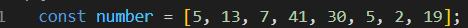
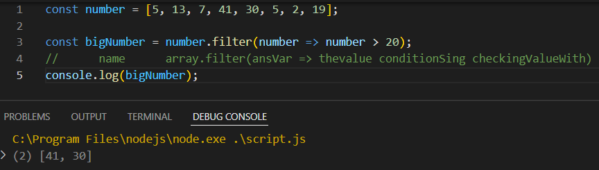
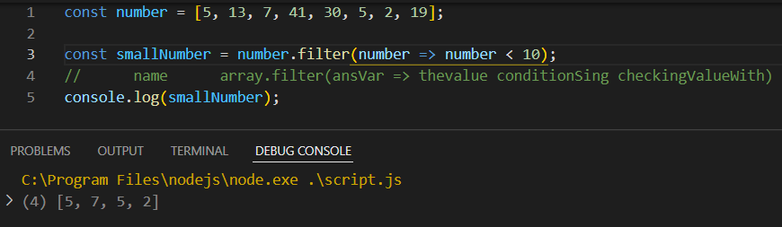
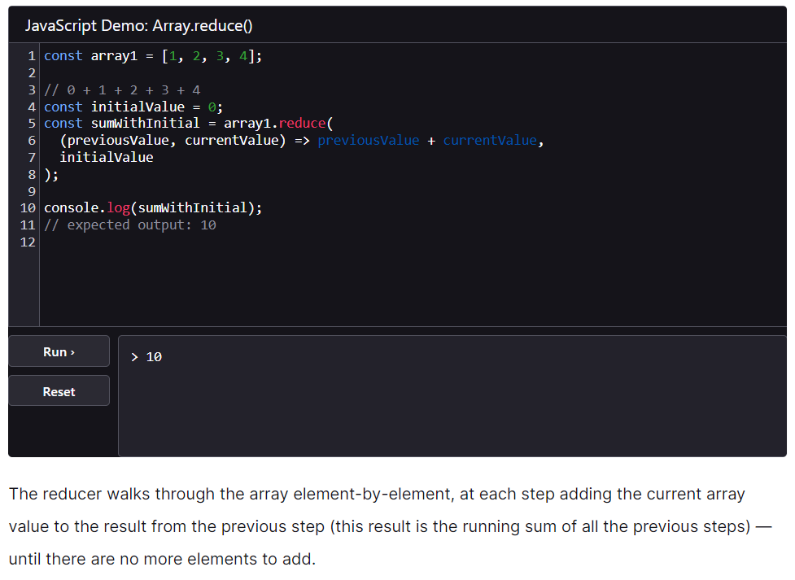
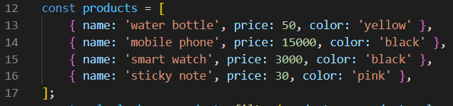
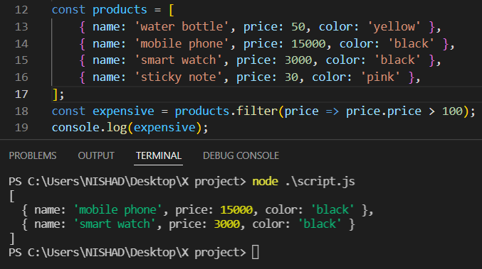
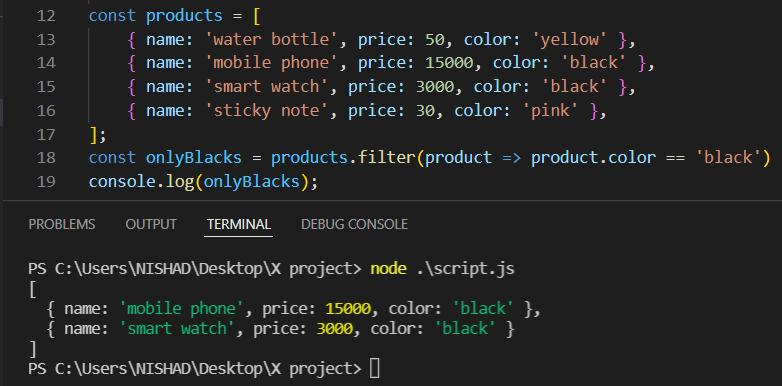
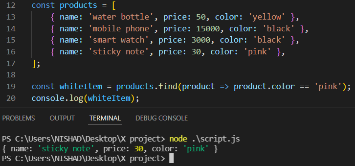

For exemple : .map এর কাজ হল প্রতিটা element এর জন্য কিছুএকটা কাজ করে ,
result return করে সেটাকে কোন একটা array এর মধ্যে রেখে পুরা array টা আমাদের দিবে ।
filter এর কাজ হল , কিছু Checkpoint / condition থাকবে সেটা অনুসারে কাউকে নিবো কাউকে নিবোনা । এটা হল filter এর কাজ ।

যেমন , যদি চাই উপরের array থেকে যে যে number গুলা 20 থেকে বড় তাদের একটা array , তবে নিচের মত করতে হবে ।

আবার , যদি চাই উপরের array থেকে যে যে number গুলা 10 থেকে ছোট তাদের একটা array , তবে নিচের মত করতে হবে ।

filter() array এর প্রতিটা উপাদানের মধ্যে সেটা সেটা শর্ত পুরন করবে তাদেরকে নতুন একটা array তে রেখে সেটাকে return করবে ।
____ array.reduce ____

এটার কাজ হল কোন array এর মধ্যে থাকা সব number দের এক সাথে যোগ করে তার সমষ্টি কে return করে ।

উপরের object এর মধ্য থেকে যাদের price 100 এর থেকে বেশি সেই objects গুলাকে একটা array এর মধ্যে রেখে ।
সেটাকে পেতে চাইলে নিচের নিয়মে পেতে হবে ।

আবার যদি চাই যে object এর মধ্যে থেকে যাদের যাদের color black তাদের নিয়ে একটা array তৈরি কর ।
তাহলে নিচের নিয়মে পেতে হবে ।

filter() সে যদি কোন কিছু না পায় তবে খালি array দিবে ।
filter() যত গুলা element কে পাবে সবগুলাকে দিবে ।
filter আর find এর মধ্যে তফাৎ হল filter একটা array return করে ।
আর find সরাসরি element কে return করে ।
এই array থেকে তার যেই element এর color , pink আছে টাকে পেতে চাইলে নিচের নিয়মে পেতে হবে ।

find() সে যদি কোন কিছু না পায় তবে খালি undefind দিবে ।
find() সে যাকে প্রথমে পাবে সে শুধু তাকে দিবে ।